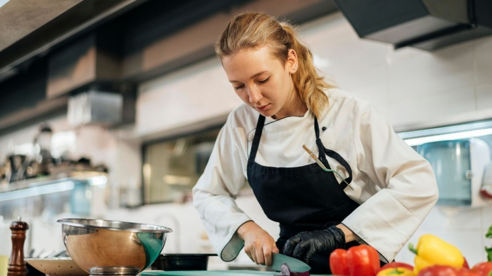

Luego de graduarme pienso emprender mi carrera como chef profesional, ya
que desde muy pequeña me ha gustado la cocina.
Al culminar mi carrera pienso viajar a varias partes del mundo para
conocer un poco mas a fondo la gastronomia de dichos paises y poco a poco
ser mejor chef.
Tambien quiero abrir mi propio restaurante, en donde pueda habilitar un
dia a la semana para hacer un comedor, y darle de comer a los que lo
necesitan.
